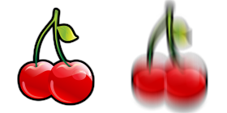
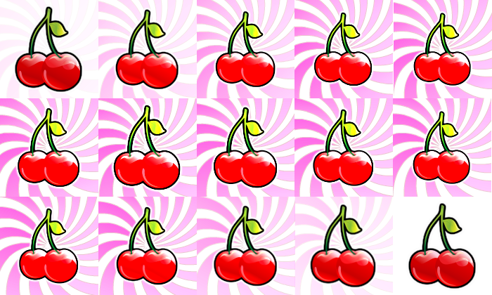

“Slot Machine - The Fruits” Documentation by “Code This Lab S.r.l.” v1.0
“Slot Machine - The Fruits”
Created: 26/03/2014
By: Code This Lab S.r.l.
Email: info@codethislab.com
Thank you for purchasing our game. If you have any questions that are beyond the scope of this help file, please feel free to email via user page contact form here. Thanks so much!
Table of Contents
- Description
- Folder Content
- Getting Started
- HTML Structure
- CSS Files and Structure
- JavaScript
- Game functions
- Asset Files
- Change symbols
- Change Graphic
- Hide Credits
- Disable Sounds
- Wordpress Plugin
A) Description - top
Slot Machine - The Fruits is a HTML5 casino game. Enjoy this coloroued slot machine with classic fruit symbols!
The ZIP package contains the game with 1500x640 resolution that scales to fit the whole screen device
Just warning that for very wide screens, the game may not be perfectly full screen.
The game is fully compatible with all most common mobile devices.
Sounds are enabled for mobile but we can't grant full audio compatibility on all mobile devices due to some well-know issue between some mobile-browser and HTML5.
So if you want to avoid sound loading, please read Disable Sound section).
WARNING: Sounds can't be enabled for Windows Phone as this kind of device have unsolved issues with 'audio' and 'video' tag.
B) Folder Content - top
- ctl_arcade_wp_plugin: This folder contains the zip package that can be used with our Wordpress plugin "CTL Arcade" (http://codecanyon.net/item/ctl-arcade-wordpress-plugin/13856421).
- game This folder contains the full game source code ready to be edited.
- live_demo This folder contains the obfuscated code. You should upload this folder on your server if you don't need to make any changes.
- readme This folder contains the package instructions.
- thumbs This folder contains all game icons.
- assets This folder contains all game graphic(.fla,.psd).
B) Getting Started - top
To install the game just upload on your server the game folder live_demo.
- Game Embedding: The proper way to embed the game is in a full-screen web page or in an iframe.
In the first case the game will fit the screen size, in the second, that of the iframe.
If the iframe size matches that of the screen, the game will fit accordingly.
The alignment will be proportioned to the aspect ratio of the game.
To install the game in a WordPress website, we suggest to use our plugin CTL Arcade .
- Save Score: if you need to call your php function for saving score, you can add it in the index.html file:
$(document).ready(function(){ var oMain = new CMain(); $(oMain).on("save_score", function(evt,iMoney) { //ADD YOUR CODE HERE }); }); - Localization: You can easily change game text for different languages, changing string in CLang.js
TEXT_MONEY = "MONEY"; TEXT_PLAY = "PLAY"; TEXT_BET = "BET"; TEXT_COIN = "COIN"; TEXT_MAX_BET = "MAX BET"; TEXT_INFO = "INFO"; TEXT_LINES = "LINES"; TEXT_SPIN = "SPIN"; TEXT_WIN = "WIN"; TEXT_HELP_WILD = "THIS SIMBOL IS A JOLLY WHICH CAN REPLACE ANY OTHER SYMBOL TO MAKE UP A COMBO"; TEXT_CREDITS_DEVELOPED = "DEVELOPED BY"; TEXT_CURRENCY = "$"; TEXT_SHARE_IMAGE = "200x200.jpg"; TEXT_SHARE_TITLE = "Congratulations!"; TEXT_SHARE_MSG1 = "You collected "; TEXT_SHARE_MSG2 = " points!
Share your score with your friends!"; TEXT_SHARE_SHARE1 = "My score is "; TEXT_SHARE_SHARE2 = " points! Can you do better?";
var oMain = new CMain({
win_occurrence:30, //WIN PERCENTAGE.SET A VALUE FROM 0 TO 100.
slot_cash: 100, //THIS IS THE CURRENT SLOT CASH AMOUNT. THE GAME CHECKS IF THERE IS AVAILABLE CASH FOR WINNINGS.
min_reel_loop:2, //NUMBER OF REEL LOOPS BEFORE SLOT STOPS
reel_delay: 6, //NUMBER OF FRAMES TO DELAY THE REELS THAT START AFTER THE FIRST ONE
time_show_win:2000, //DURATION IN MILLISECONDS OF THE WINNING COMBO SHOWING
time_show_all_wins: 2000, //DURATION IN MILLISECONDS OF ALL WINNING COMBO
money:100, //STARING CREDIT FOR THE USER
/***********PAYTABLE********************/
//EACH SYMBOL PAYTABLE HAS 5 VALUES THAT INDICATES THE MULTIPLIER FOR X1,X2,X3,X4 OR X5 COMBOS
paytable_symbol_1: [0,0,100,150,200], //PAYTABLE FOR SYMBOL 1
paytable_symbol_2: [0,0,50,100,150], //PAYTABLE FOR SYMBOL 2
paytable_symbol_3: [0,10,25,50,100], //PAYTABLE FOR SYMBOL 3
paytable_symbol_4: [0,10,25,50,100], //PAYTABLE FOR SYMBOL 4
paytable_symbol_5: [0,5,15,25,50], //PAYTABLE FOR SYMBOL 5
paytable_symbol_6: [0,2,10,20,35], //PAYTABLE FOR SYMBOL 6
paytable_symbol_7: [0,1,5,10,15], //PAYTABLE FOR SYMBOL 7
/*************************************/
fullscreen:true, //SET THIS TO FALSE IF YOU DON'T WANT TO SHOW FULLSCREEN BUTTON
check_orientation:true, //SET TO FALSE IF YOU DON'T WANT TO SHOW ORIENTATION ALERT ON MOBILE DEVICES
show_credits:true, //ENABLE/DISABLE CREDITS BUTTON IN THE MAIN SCREEN
ad_show_counter:3 //NUMBER OF SPIN PLAYED BEFORE AD SHOWING
//
//// THIS FEATURE IS ACTIVATED ONLY WITH CTL ARCADE PLUGIN.///////////////////////////
/////////////////// YOU CAN GET IT AT: /////////////////////////////////////////////////////////
// http://codecanyon.net/item/ctl-arcade-wordpress-plugin/13856421///////////
});
C) HTML Structure - top
This game have the canvas tag in the body. The ready event into the body calls the main function of the game: CMain().
The head section declares all the javascript functions of the game. The whole project uses a typical object-oriented approach.
In the init function there are 5 mapped events that can be useful eventually for stats
D) CSS Files and Structure - top
The game use two CSS files. The first one is a generic reset file. Many browser interpret the default behavior of html elements differently. By using a general reset CSS file, we can work round this. Keep in mind, that these values might be overridden somewhere else in the file.
The second file contains all of the specific stylings for the canvas and some hack to be fully compatible with all most popular mobile devices
E) JavaScript - top
This game contains:
- jQuery
- Our custom scripts
- CreateJs plugin
- Howler plugin
- Screenfull plugin
- jQuery is a Javascript library that greatly reduces the amount of code that you must write.
- The game have the following js files:
- CMain: the main class called by the index file.
This file controls the sprite_lib.js file that manages the sprite loading, the loop game and initialize the canvas with the CreateJs library - ctl_utils: this file manages the canvas resize and its centering
- sprite_lib: this class loads all images declared in the main class
- settings: general game settings
- CLang: global string variables for language localization
- CPreloader: simple text preloader to show resources loading progress
- CMenu: simple menu with play button
- CGfxButton: this class create a standard button
- CTextButton: this class create a standard text button
- CHelp: this class manages the help panel that appears when game starts
- CGame: this class manages the game logic
- CPayTablePanel: this class manages the paytable panel that is shown clicking the info button
- CInterface: this class controls game GUI that contains text and buttons
- CEndPanel: this class controls the game over panel that appears when player lose all the lives
- CSlotSettings: this class contains all infos relative to symbols, combos and their animations
- CMain: the main class called by the index file.
- CreateJs is a suite of modular libraries and tools which work together to enable rich interactive content on open web technologies via HTML5.
- Howler is a javascript Audio library.
Resuming, the complete game flow is the following:
- The index.html file calls the CMain.js file after ready event is called
- The main class calls CPreloader.js to init preloader text and start sprite loading
- When all sprites contained in "/sprites" folder are loaded, the main class removes the preloader and calls the CMenu.js file that shows the main menu
- If user click on the play button in main menu, the CGame.js class is called and the game starts
- The User can start slot spinning, clicking the spin button on the right
- If user click on the exit button in the up-right corner, the game returns to the menu screen
F) Game functions - top
In this section will be explained all the most important functions used in CGame.js file.- _init()
This function attach on the canvas some game sprites like background (oBg), GUI, help panel and paytable. It also init the reels. - unload()
This function removes all images from canvas and event listeners on buttons. It's called when user decide to exit from the game. - generateFinalSymbols()
This function choose randomically the final symbols to show after reel spinning. It also check if user have winning combos - reelArrived()
This function manages reel loop during slot spinning - _endReelAnimation()
This function reset slot buttons and increase eventually user money if there are winning combos - _showWin()
This function shows next winning combo after slot spinning. - onSpin()
This function is called when user click spin button. - update()
This function manages the game loop.
G) Asset Files - top
The game package contains two folders: psd (Photoshop) and fla (Flash).
Psd folder contains:
- button_states_100x32.psd: png of lines bet button
- symbols_140x140.psd: all slot symbols
- symbols_ani_700x420.psd: all symbols animation that are shown after a winning combo
- template_game.psd: images for menu, game and paytable screens
- win_frame_anim.psd: spritesheet of winning frame
- win_frame_anim_effect.psd: spritesheet of winning frame with effect
Fla folder contains:
- ani_symbol_j.fla: complete animation frames for symbol J
- ani_symbol_q.fla: complete animation frames for symbol Q
- ani_symbol_k.fla: complete animation frames for symbol K
- ani_symbol_peach.fla: complete animation frames for symbol PEACH
- ani_symbol_pear.fla: complete animation frames for symbol PEAR
- ani_symbol_watermelon.fla: complete animation frames for symbol WATERMELON
- ani_symbol_cherry.fla: complete animation frames for symbol CHERRY
- ani_symbol_wild.fla: complete animation frames for symbol WILD
- lines.fla: images of all paylines
H) Change symbols - top
The game contains the symbol spritesheets that you must edit if you want to change symbol images.
You have to edit two png to change any particular symbol in game: symbol_[index].png and symbol_[index]_anim.png.
- symbol_1.png: Each symbol is composed by two images: the one on the left is the still symbol, the other one is the moving symbol.

- symbol_1_anim.png: This spritesheet contains all animation frames. Replace these 140x140 images into symbols_ani_700x420.psd file to get new animations.

I) Change Graphic - top
You can easily change all the game graphic, replacing all the file you need in the "/sprites" folder. Just respect file format (.png or .jpg) and size if you don't want to change any code line.
I) Hide Credits - top
If you want to hide credits in main menu, change to false the following value in index.html file:
show_credits:false
J) Disable Sounds - top
If you want to disable all the sounds for mobile devices, you have to change the following value in settings.js file:
var DISABLE_SOUND_MOBILE = true;
K) Wordpress Plugin - top
CTL Arcade will allow you to add a real arcade on your worpress website, in this way your users will be more involved and will stay connected longer.
It's possible to add Ads banner at the beginning of each game and at the end of each level. This will give you a new tool to increase your revenues.
Your own users will promote your website sharing their scores on the main Social Networks, with no extra costs for you.
You'll get by default the score-sharing on Twitter. To add Facebook just follow the guideline below.
3 widgets can be added in your pages through a shortcode.
- Game iframe
- Rate the Game
- Leaderboard
- PHP 4.3
- WordPress 4.3.1
- HTML5
- Canvas
- Javascript / jQuery
You can find it here!

Once again, thank you so much for purchasing this game. Fell free to contact us if you have any questions or issue relating to this game. No guarantees, but we'll do our best to assist.